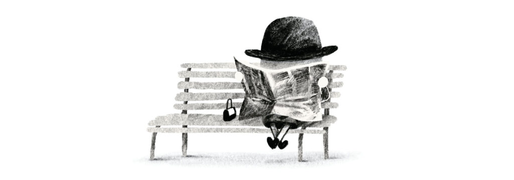
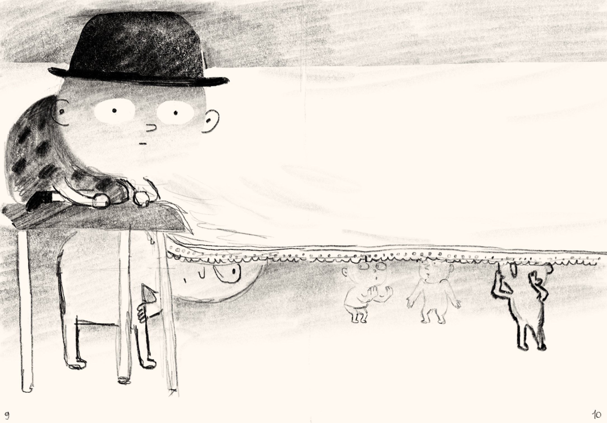
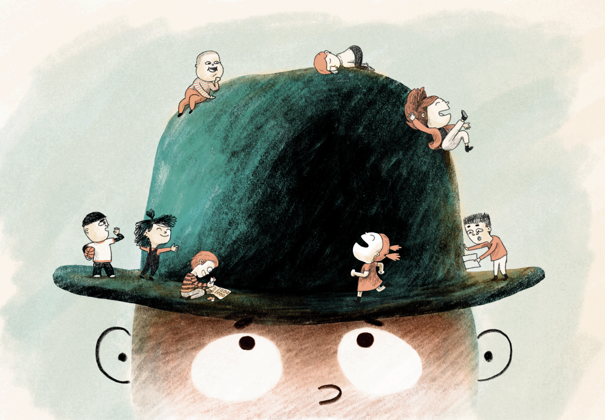

Lukas, nematomas berniukas
Lukas è un bambino che sa sparire benissimo. Non nel senso magico, o forse un po’ sì: è bravo a passare inosservato, a stare ai margini, a non farsi vedere troppo. Ma quando la sua invisibilità diventa improvvisamente qualcosa che tutti notano, Lukas si ritrova al centro dell’attenzione e deve capire che cosa significa davvero essere visto.
Di cosa parla
Lukas, nematomas berniukas parla di tutti quei momenti in cui ci si sente invisibili. Ma racconta anche il contrario:cosa succede quando, all'improvviso, tutti iniziano ad accorgersi di te?
Lukas vorrebbe nascondersi, ma il suo talento nel passare inosservato lo porta paradossalmente a essere notato da tutti. Da lì comincia una piccola avventura sul bisogno di trovare il proprio posto, senza sparire e senza doversi trasformare in qualcos'altro.
È una storia sul sentirsi invisibili, sull’amicizia e sul desiderio di appartenere a un gruppo, anche quando non è facile farsi vedere per quello che si è.
Backstage

Diventare invisibili
Lukas è nato dopo aver visto un disegno di Lucio Notarnicola: un bambino trasparente seduto su una panchina con una bombetta in testa. Mi sono chiesta perché si stesse nascondendo dietro un giornale. Da quella domanda è nata la storia.

Un libro bilingue
Pubblicato da una casa editrice lituana, il libro è stato pensato in due lingue, lituano e inglese. Per attraversare confini e lettori diversi, pur parlando di qualcosa di universale.

Cose rimaste fuori
Prima che Lukas trovasse il suo nome definitivo, per molto tempo è stato Rolando.